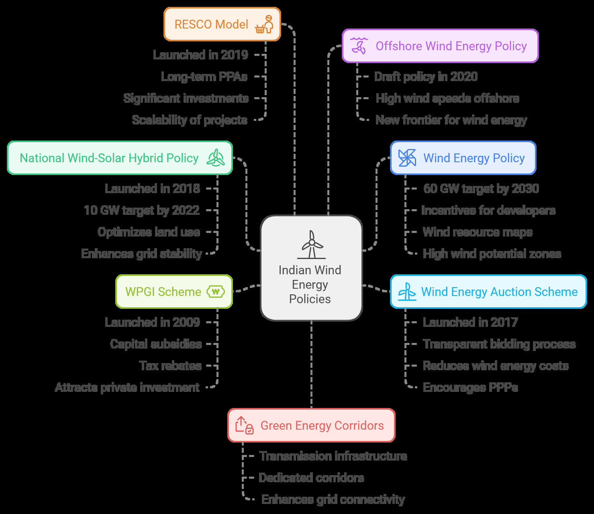
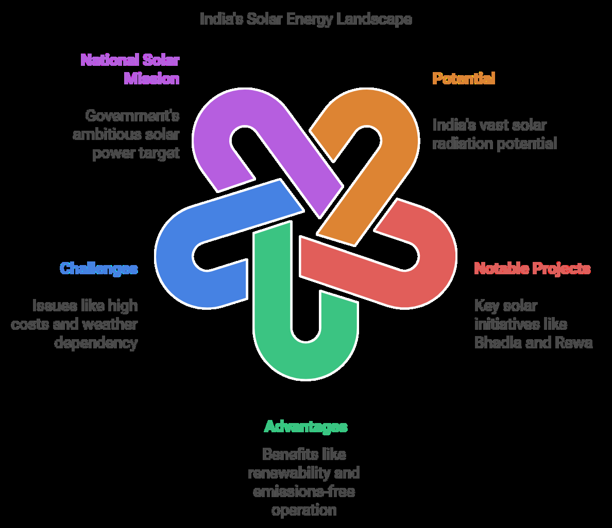

31 Energy Resources In India Solar And Wind Powerplants
Wind and Solar Powerplants
Wind Energy
Wind energy is one of the most promising renewable energy sources globally, and India, with its vast coastline and favorable wind conditions, has immense potential for wind power generation.
As a country committed to transitioning towards sustainable energy solutions, India has made significant strides in harnessing wind energy to meet its growing electricity demand while simultaneously addressing climate change concerns.
Wind energy involves the conversion of wind's kinetic energy into mechanical or electrical energy using wind turbines.
India is the 4th largest producer of wind energy globally, with the installed capacity surpassing 40 GW as of 2023.
The country's renewable energy goals, particularly its target of achieving 500 GW of non-fossil fuel capacity by 2030, place wind energy at the heart of India's energy strategy.
Major Wind Farms:
| Plant Name | Location (State) | Capacity (MW) | Commissioning Date | Additional Information |
|---|---|---|---|---|
| Muppandal Wind Farm | Tamil Nadu | 1,500 | 2005 | One of the largest onshore wind farms in India, leveraging the high wind potential of the region. |
| Jaisalmer Wind Park | Rajasthan | 1,064 | 2001 | Developed by Suzlon Energy, this park signifciantly contributes to the state's renewable energy capacity. |
| Brahmanvel Wind Farm | Maharashtra | 528 | 2009 | Located in Dhule district, enhancing the region's wind power generation. |
| Dhalgaon Wind Farm | Maharashtra | 278 | 2008 | Situated in Sangli district, contributing to the state's renewable energy portfolio. |
|---|---|---|---|---|
| Vankusawade Wind Park | Maharashtra | 259 | 2006 | Located in Satara district, known for its high wind energy potential. |
National Wind-Solar Hybrid Policy
It was launched in 2018 by the Ministry of New and Renewable Energy (MNRE). To promote hybrid systems that combine wind and solar power generation, aiming to increase energy efficiency.
Key Features:
●
Encourages the development of projects that integrate both wind and solar generation.
Focuses on optimizing land use and enhancing grid stability by combining the variable nature of wind and solar energy.
It aims to achieve the target of 10 GW of hybrid capacity by 2022.
Impact:
●
This policy is expected to increase the viability and financial attractiveness of renewable energy projects, addressing the intermittency issues of renewable energy.
Wind Energy Policy
Various updates over the years (latest in 2016, and now part of the Renewable Energy Targets).
To promote the growth of wind energy capacity in India, with a target of installing 60 GW of wind power by 2030.
Key Features:
●
Provides incentives for both private developers and public sector companies to install wind energy capacity. Wind energy zones were identified for ease of land allocation and project development.
Facilitates the installation of wind power plants through the establishment of wind resource maps and high wind potential zones.
Impact:
India has emerged as the 4th largest producer of wind power globally, and the sector continues to grow under this policy framework.
Wind Energy Auction Scheme
It was launched in 2017, as part of the government’s push to adopt competitive bidding for wind projects.
To ensure the installation of wind energy capacity through a transparent and competitive bidding process.
Key Features:
●
Auctions are held for the allocation of wind power projects, allowing developers to bid for projects at competitive prices.
The scheme aims to reduce the cost of wind energy, making it more attractive compared to conventional energy sources.
Encourages both private sector participation and public-private partnerships (PPPs).
Impact:
The auction model has driven down costs for wind energy, helping make it one of the cheapest sources of electricity in India.
Wind Power Generation Incentive (WPGI) Scheme
It was launched in 2009 (with revisions over time). To provide financial support and incentives for wind power generation in India.
Key Features:
●
Financial incentives for developers and companies who install wind energy projects.
Includes capital subsidies, tax rebates, and other fiscal incentives to reduce the upfront cost of installation.
Impact:
The WPGI has helped increase the installation of wind energy projects, especially by attracting private investment.
Renewable Energy Service Companies (RESCO) Model for Wind
Energy
It was launched in 2019. To encourage third-party participation in wind power projects through the RESCO model.
Key Features:
●
Encourages private companies to install and operate wind power plants on behalf of other stakeholders.
It provides for long-term power purchase agreements (PPAs) with the state-owned utilities.
Impact:
This model has attracted significant investments in wind energy, improving the scalability of wind power projects across the country.
Offshore Wind Energy Policy
Launched Draft policy in 2020. To explore the potential for offshore wind energy, which remains untapped in India.
Key Features:
Focuses on creating an enabling environment for offshore wind power development along the coastline.
Identifies potential zones for offshore wind projects and aims to harness the high wind speeds offshore.
Impact:
●
This policy could open up a new frontier for wind energy in India, with the potential for a significant increase in wind energy generation capacity.
Green Energy Corridors for Wind Power
To facilitate the integration of renewable energy, including wind power, into the national grid.
Key Features:
●
Developing transmission infrastructure for the evacuation of wind power from high-potential regions to demand centers.
Establishment of dedicated corridors for renewable energy, including wind.
Impact:
This initiative will ensure that wind energy produced in remote areas can be transported to major urban centers and industries, enhancing grid connectivity and reliability.

Solar Energy:
Solar energy is one of the most abundant and promising sources of renewable energy, particularly for a country like India, which enjoys a high level of solar insolation throughout the year.
With its vast geographical expanse and sunny climate, India is well-positioned to harness solar power to meet its growing energy demands and achieve its sustainable development goals.
The potential for solar energy in India is immense, with the country receiving approximately 300 sunny days per year.
Solar energy refers to the conversion of sunlight into electricity using photovoltaic (PV) cells or through solar thermal power systems.
India is among the world’s leading nations in solar energy production, having made remarkable progress in expanding its solar capacity over the past decade.

Major Solar Power Plants in India
| Plant Name | Location (State) | Capacity (MW) | Commissioning Date | Additional Information |
|---|---|---|---|---|
| Bhadla Solar Park | Rajasthan | 2,245 | March 2020 | Recognized as the world's largest solar park, spanning approximately 14,000 acres. |
| Pavagada Solar Park | Karnataka | 2,050 | December 2019 | Also known as Shakti Sthala, this park covers around 13,000 acres. |
| Rewa Ultra Mega Solar Park | Madhya Pradesh | 750 | July 2020 | Pioneered grid parity solar power in India, supplying power to the Delhi Metro. |
| Kurnool Ultra Mega Solar Park | Andhra Pradesh | 1,000 | March 2017 | One of the largest single-location solar projects in the country. |
| Kamuthi Solar Power Project | Tamil Nadu | 648 | September 2016 | Developed by Adani Power, this project is spread across 2,500 acres. |
National Solar Mission (NSM)
It was launched in 2010 as part of India’s National Action Plan on Climate Change (NAPCC).
The NSM aims to promote solar energy in India, to achieve 100 GW of solar power by 2022 (recently revised to 500 GW non-fossil fuel capacity by 2030).
Key Features:
●
Incentives for Solar Power Generation: Includes financial support and incentives for developers to set up large solar parks.
Solar Park Development:
The government provides land, clearances, and financial backing for establishing solar parks to promote large-scale solar energy generation.
Impact:
It helped India become one of the largest solar energy producers in the world, with significant progress in solar capacity installation.
Pradhan Mantri Kisan Urja Suraksha Evam Utthaan Mahabhiyan
(PM-KUSUM) Scheme
It was launched in 2019 by the Ministry of New and Renewable Energy (MNRE). To provide solar pumps for farmers and promote decentralized solar power generation.
Key Features:
Subsidies to farmers for the installation of solar-powered agricultural pumps. Incentives for creating decentralized solar power plants to improve electricity access in rural areas.
In 2020, the scheme was expanded to include the installation of grid-connected solar power plants.
Impact:
This helps reduce dependency on grid electricity in rural areas, promotes clean energy use, and benefits farmers by providing reliable irrigation systems.
Solar Rooftop Scheme
To encourage the installation of solar panels on rooftops for residential, commercial, and industrial users.
Key Features:
●
Subsidies and financial incentives for residential consumers to install rooftop solar systems.
Targets 40 GW capacity from rooftop solar by 2022 (though implementation is ongoing with varying levels of success across states).
Impact:
Encourages decentralized solar power generation, reduces transmission losses, and empowers consumers with energy independence.
National Mission on Transformative Mobility and Battery Storage
To promote electric vehicles (EVs) and renewable energy integration through battery storage, which can also support solar power.
Key Features:
●
Financial support for the development of battery storage solutions for renewable energy.
Focus on scaling up the use of renewable energy in the transportation sector, further bolstering solar power integration.
Impact:
Promotes the integration of solar energy into transport systems and reduces fossil fuel reliance.
Interim Measures for Solar Manufacturing (Atmanirbhar Bharat)
To promote the domestic manufacturing of solar components, and reduce import dependence.
Key Features:
●
PLI Scheme (Production-Linked Incentive): The government has announced production-linked incentives for the manufacturing of solar modules and cells under the Atmanirbhar Bharat initiative.
The focus is to make India a global hub for solar manufacturing, creating jobs and reducing reliance on imports.
Impact:
●
It aims to reduce India's reliance on imports (mainly from China), create jobs, and strengthen India’s position in the global solar energy market.
Renewable Energy Investment Promotion (REIP) Policy
To promote private investment in solar energy projects and make India a leader in renewable energy.
The policy includes setting up of solar parks, financial incentives, and land banks. It provides a single-window clearance system for renewable energy projects.